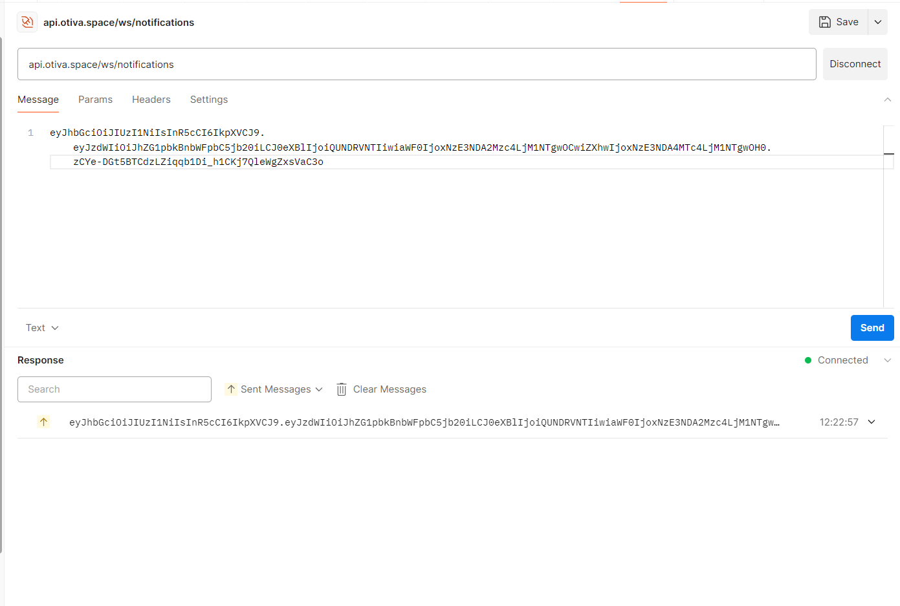
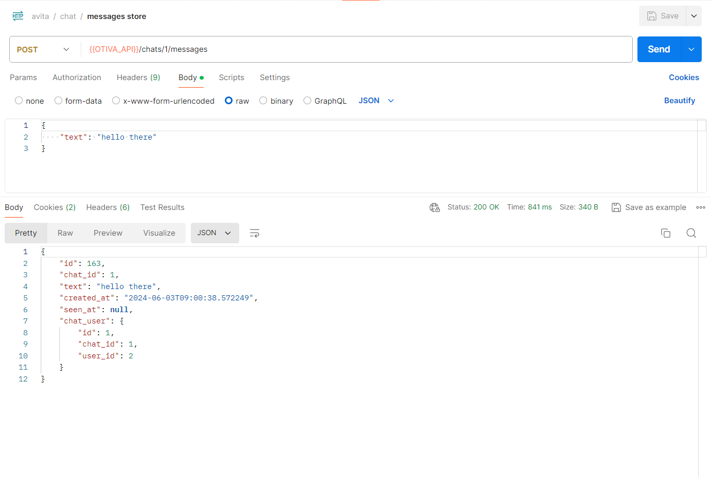
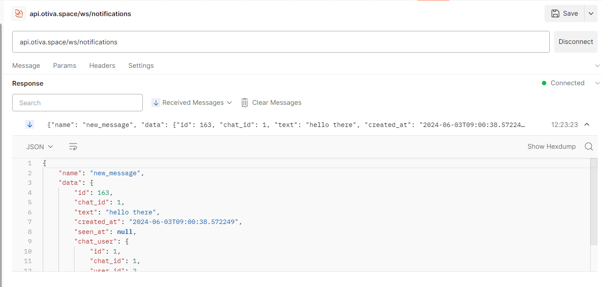

Отчёт
Задача лабораторной работы
Научиться упаковывать FastAPI приложение в Docker, интегрировать парсер данных с базой данных и вызывать парсер через API и очередь.
Стек
nginxcertbotfastapipostgresqluvicorngunicornalembicsqlalchemyjose- генерация JWT токеновredis- для обмена сообщениями через publisher/subscriber
Структура папок
├── fastapi
└── src
└── api
├── dependecies
├── routers
├── transformers
└── api
├── config
└── database
├── migrations
└── seeders
├── utils
└── env.example
└── Dockerfile
└── env.example
├── nginx
└── conf.d
└── app.conf
├── pgsql
└── env.example
└── redis
└── redis.conf
├── docker-compose.yml
└── README.md
Запуск
Запуск проекта осуществляется командой docker compose up.
Миграции применяются через alembic upgrade head
Результаты
Получилось упаковать приложение на fastapi вместе с redis и postgres в Docker, интегрировать с БД, развернуть его в облаке и обеспечить доступ по https.
Ход работы
Docker
Рассмотрим конфигурации приложения:
Dockerfile fastapi: устанавловаем все необходимые зависимости, открываем порт и запускаем воркеры uvicorn с помощью gunicorn
FROM python:3.9-alpine
WORKDIR /app
COPY ./requirements.txt requirements.txt
RUN apk update && \
apk add build-base && \
pip install -r requirements.txt
EXPOSE 8000
CMD ["gunicorn", "src.main:app", "--workers", "4", "--worker-class", "uvicorn.workers.UvicornWorker", "--bind", "0.0.0.0:8000"]
В композ-файле объявлены пять сервисов:
- Прокси сервер (nginx)
- сертбот для получения ssl-сертификатов (certbot)
- База данных (postgres)
- Redis (redis)
- Приложение API (fastapi)
```YML title="docker-compose.yml" version: '3' services:
nginx: image: nginx:alpine container_name: otiva_nginx restart: unless-stopped ports: - "80:80" - "443:443" volumes: - ./certbot/www:/var/www/certbot/ - ./certbot/conf:/etc/letsencrypt/ - ./nginx/conf.d/:/etc/nginx/conf.d/ networks: - otiva
fastapi: container_name: otiva_fastapi restart: unless-stopped build: context: ./fastapi dockerfile: Dockerfile ports: - "5000:5000" volumes: - ./fastapi:/app networks: - otiva
postgres: container_name: otiva_postgres restart: unless-stopped image: postgres:14 ports: - "5432:5432" env_file: - ./pgsql/.env volumes: - otiva-pgsql-volume:/var/lib/postgresql/data networks: - otiva
redis: image: redis:alpine container_name: otiva_redis restart: unless-stopped volumes: - otiva-redis-volume:/data - ./redis/redis.conf:/usr/local/etc/redis/redis.conf expose: - 6379 command: redis-server /usr/local/etc/redis/redis.conf networks: - otiva
certbot: image: certbot/certbot container_name: otiva_certbot volumes: - ./certbot/conf:/etc/letsencrypt - ./certbot/www:/var/www/certbot command: certonly --webroot -w /var/www/certbot/ --email test.space@gmail.com --agree-tos
networks: otiva: driver: bridge
volumes: otiva-pgsql-volume: driver: local otiva-redis-volume: driver: local
Конфигурация nginx
```bash title=app.conf
server {
server {
listen 80;
server_name api.otiva.space;
location /.well-known/acme-challenge/ {
root /var/www/certbot;
}
location / {
return 301 https://$host$request_uri;
}
}
server {
listen 443 ssl;
server_name api.otiva.space;
ssl_certificate /etc/letsencrypt/live/otiva/fullchain.pem; # managed by Certbot
ssl_certificate_key /etc/letsencrypt/live/otiva/privkey.pem; # managed by Certbot
charset utf-8;
set $cors_origin "";
set $cors_cred "";
set $cors_header "";
set $cors_method "";
if ($http_origin = "https://otiva.space") {
set $cors_origin $http_origin;
set $cors_cred true;
set $cors_header $http_access_control_request_headers;
set $cors_method $http_access_control_request_method;
}
add_header Access-Control-Allow-Origin $http_origin always;
add_header Access-Control-Allow-Credentials $cors_cred always;
add_header Access-Control-Allow-Headers $cors_header always;
add_header Access-Control-Allow-Methods $cors_method always;
if ($request_method = 'OPTIONS') {
return 204;
}
location /ws {
proxy_pass http://otiva_fastapi:8000;
proxy_http_version 1.1;
proxy_set_header Upgrade $http_upgrade;
proxy_set_header Connection "Upgrade";
proxy_set_header Host $host;
}
location / {
proxy_pass http://otiva_fastapi:8000;
proxy_set_header Host $host;
proxy_set_header X-Real-IP $remote_addr;
proxy_set_header X-Forwarded-For $proxy_add_x_forwarded_for;
proxy_set_header X-Forwarded-Proto $scheme;
proxy_redirect off;
}
}
FastAPI
Был написан небольшой клиент для работы с redis pub/sub ```python title=pubsub.py from src.utils.redis import redis import json import asyncio from typing import Union
class PubSubEvents: NEW_MESSAGE: str = 'new_message'
class PubSubMessage: def init(self, data, pattern, channel, type): self.data = data self.pattern = pattern self.channel = channel self.type = type
class PubSubEvent: def init(self, name, data: Union[list, dict]): self.name = name self.data = data
def serialize(self) -> str:
data = {
'name': self.name,
'data': self.data,
}
return json.dumps(data)
class PubSub: @staticmethod async def publish(payload: dict[str, PubSubEvent]): """Accepts dict {channel_name: data} and publishes data to respective channel names""" if not payload: return pub = redis.get_connection()
for channel in payload:
event: PubSubEvent = payload[channel]
await pub.publish(channel, event.serialize())
await pub.close()
@staticmethod
async def subscribe(channel: str):
sub = redis.get_connection().pubsub()
async with sub as conn:
await conn.subscribe(channel)
while True:
try:
message = await conn.get_message(ignore_subscribe_messages=True)
if message is not None:
dto = PubSubMessage(
data=message['data'].decode('utf-8'),
pattern=message['pattern'].decode('utf-8') if message['pattern'] else None,
channel=message['channel'].decode('utf-8') if message['channel'] else None,
type=message['type'] if message['type'] else None,
)
yield dto
await asyncio.sleep(1)
except Exception:
break
await conn.unsubscribe(channel)
await sub.close()
Pub/sub redis используется в приложении для отправки уведомлений пользователю черезз Websockets
```python title=notifications.py
from fastapi import WebSocket, APIRouter, Depends
from src.api.dependencies.auth import Auth
from src.utils.pubsub import PubSub
router = APIRouter()
@router.websocket("/ws/notifications")
async def websocket_endpoint(websocket: WebSocket, auth: Auth = Depends()):
await websocket.accept()
try:
user = await auth.check_access_token_websocket(websocket)
except Exception as e:
await websocket.send_text('Unauthenticated')
await websocket.close()
return
channel_name = f'notifications:{user.id}'
async for message in PubSub.subscribe(channel_name):
await websocket.send_text(message.data)
await websocket.close()
Пример отправки сообщения о новом сообщении в чате:
```python title=chat.py @router.post('/{chat_id}/messages') async def store_message(chat_id: int, request: Request, auth: Auth = Depends()): await auth.check_access_token(request)
validator = Validator(await request.json() | {'chat_id': chat_id}, {
'text': ['required', 'string'],
}, {}, BasePayload())
payload = validator.validated()
# chat must have current user as ChatUser
async with db_manager.get_session() as session:
q = select(Chat) \
.options(joinedload(Chat.chat_users)) \
.where(Chat.id == chat_id)
res = await session.execute(q)
chat: Chat = res.scalar()
if not chat:
return ApiResponse.error('Chat does not exists.')
current_chat_user: ChatUser = next(filter(lambda cu: cu.user_id == request.state.user.id, chat.chat_users), None)
if not current_chat_user:
return ApiResponse.error('User does not belongs to this chat.')
message: ChatMessage = await SqlAlchemyRepository(db_manager.get_session, ChatMessage).create({
'chat_user_id': current_chat_user.id,
'chat_id': chat_id,
'text': payload.text,
'seen_at': None,
})
transformed_message = transform(message, ChatMessageTransformer())
notifications = {}
for chat_user in chat.chat_users:
# do not notify sender
if chat_user.user_id == request.state.user.id:
continue
notifications[f'notifications:{chat_user.user_id}'] = PubSubEvent(PubSubEvents.NEW_MESSAGE, transformed_message)
await PubSub.publish(notifications) # todo to queue
return ApiResponse.payload(transformed_message)
```
Пример работы:
Подключаемся к вебсокету

Отправляем сообщение

Уведомление пришло
